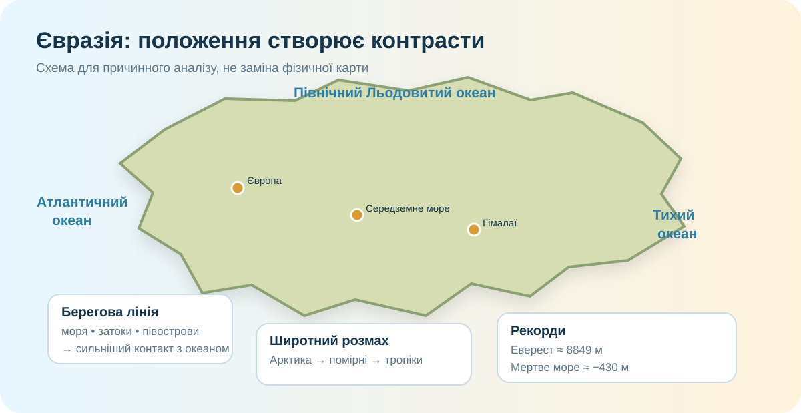

1. Швидка гіпотеза — 3 хв
Контрасти Євразії пояснюються насамперед її величезною протяжністю із заходу на схід.
Головна причина — широтний розмах від Арктики до тропіків і екваторіальних широт островів.
Одна причина не працює: потрібна комбінація розмірів, положення, рельєфу й океанічного впливу.
2. Реальна карта: материк як простір — 7 хв

Супутникова мозаїка NASA Blue Marble. Шукайте не назви, а великі просторові контрасти: льодові узбережжя, пустелі, високогір’я, зелені мусонні області.
Завдання 2.1. «Чотири океани — одна система»
Знайдіть на карті узбережжя Північного Льодовитого, Атлантичного, Індійського й Тихого океанів. Який висновок про положення Євразії випливає вже з цього?
Завдання 2.2. Моря без зубріння
Оберіть рядок, у якому всі моря справді омивають Євразію.
3. Берегова лінія: чому вона така «неспокійна» — 5 хв

Порівняйте захід і південь Євразії з більш рівними ділянками північного узбережжя. Де більше півостровів, морів і заток? Чому саме сильно розчленована берегова лінія посилює океанічний вплив углиб суходолу?
4. Рекорди як докази — 6 хв
Еверест — приблизно 8849 м. Питання важливіше за число: чому саме тут виник такий рельєф?
Узбережжя Мертвого моря лежить більш ніж на 400 м нижче рівня моря. Контраст висот на одному материку — майже 9,3 км.
Внутрішні райони Сибіру переживають дуже сильні зимові морози, тоді як Південна та Південно-Східна Азія мають тропічні й екваторіальні умови.
Мініобчислення
Візьміть 8849 м і −430 м як округлені значення. Яка приблизна амплітуда абсолютних висот?
5. Коротке відео — 2 хв
Дивіться не як «красивий ролик», а як географ: де видно океанічність, великі масиви суходолу, хмарність і різні поверхні?
6. Спершу висновок, потім теорія — 4 хв
Закінчіть причинний ланцюг: величезні розміри + широтний розмах + чотири океани + складна берегова лінія → ... → географічні контрасти та рекорди.
Географічне положення
Євразія — найбільший материк Землі. Вона простягається через дуже широкий діапазон широт і омивається чотирма океанами. Віддаленість центральних районів від океанів створює сильну континентальність, а узбережжя — морський вплив.
Берегова лінія
Європейська й південна частини материка мають багато морів, півостровів, островів і заток. Розчленованість змінює проникнення морського повітря, транспортну доступність і локальні природні умови.
Контрасти
Євразія поєднує арктичні пустелі й вологі екваторіальні ліси, найвищі гори світу й глибокі западини суходолу, надзвичайно вологі мусонні області та посушливі внутрішні пустелі.
Головна ідея
Не існує одного «магічного чинника». Контрасти виникають із взаємодії положення, розмірів, рельєфу, циркуляції атмосфери та океанічного впливу.
7. CER — 4 хв
Claim: доведіть або спростуйте тезу «Євразія — материк контрастів не просто через великий розмір».
8. Домашнє завдання
§49. Складіть таблицю «Моря, які омивають Євразію»: море → океан → частина Євразії → одна географічна особливість. Додатково оберіть одне море і коротко поясніть, як його положення впливає на сусідню територію.
9. Тест — 10 балів
Він відкриється лише після введення прізвища, імені та класу.